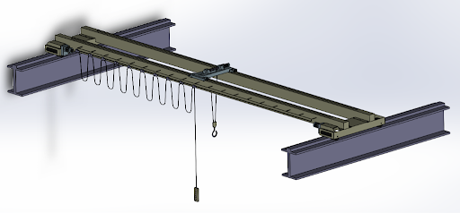
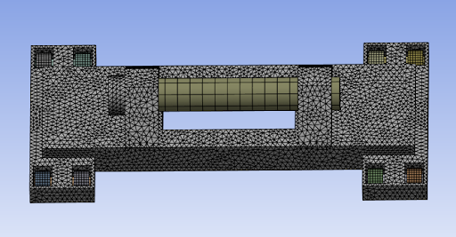
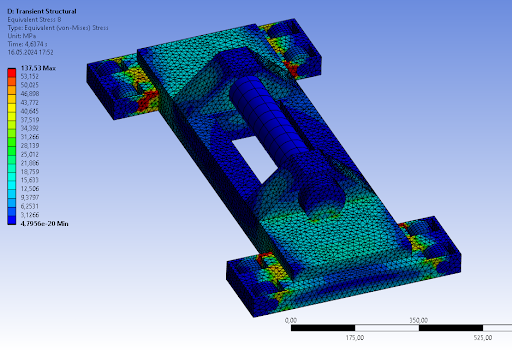
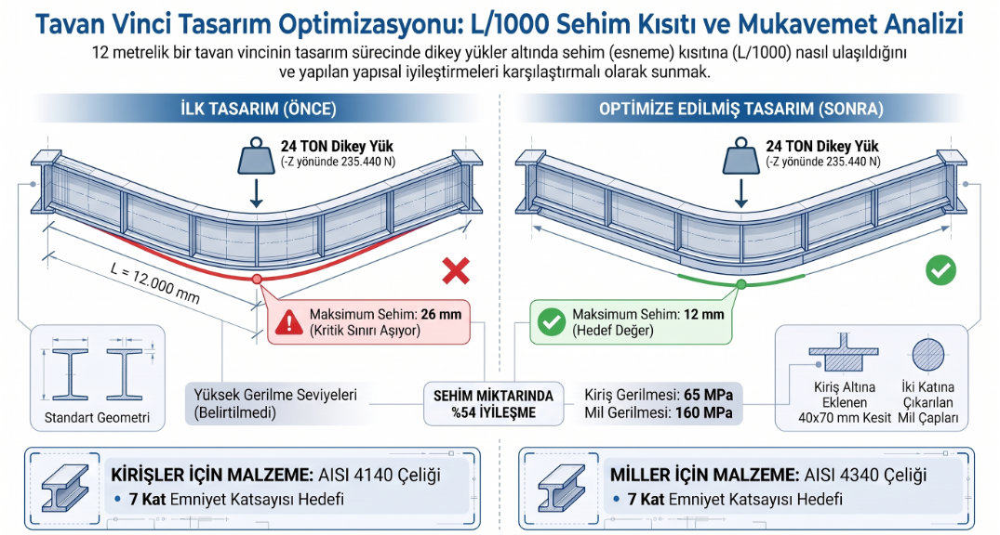

Bir tavan vincinin tasarımında sadece 14 milimetrelik fazladan bir esnemenin, tüm bir endüstriyel tesisi ve çalışanları felakete sürükleyebileceğini biliyor muydunuz?
Bu eğitimde, 24 ton taşıma kapasiteli ve 12 metre açıklığa sahip çift köprülü bir tavan vincinin yapısal sınırlarını ANSYS ortamında nasıl test ettiğimizi, sehim miktarını mühendislik modifikasyonlarıyla nasıl yarı yarıya düşürdüğümüzü ve kritik bileşenleri nasıl optimize ettiğimizi adım adım inceleyeceğiz.
Bu proje, ağır sanayi kollarında yaygın olarak kullanılan çift köprülü bir tavan vincinin statik dayanımını, modal davranışlarını ve zaman alanındaki dinamik yük tepkilerini incelemek amacıyla ANSYS ortamında gerçekleştirilmiştir. Yapılan ilk statik analizlerde 12 metrelik açıklıkta standart dışı 26 mm sehim yapan yapı, uygulanan yenilikçi takviye kirişi modifikasyonuyla hedef sehim limiti olan 12 mm sınırına başarıyla çekilmiştir. Gerilme analizleri doğrultusunda ana kirişler için AISI 4140 alaşımlı çeliği, miller için ise AISI 4340 alaşımlı çeliği seçilerek endüstri standardı olan 7 kat emniyet katsayısı tam olarak garanti altına alınmıştır.
Ağır sanayi tesislerinde çalışacak köprülü vinçlerde en kritik tasarım parametresi sehim sınırıdır. Türkiye ve dünya genelindeki genel mühendislik standartlarına göre, köprülü vinçlerin köprülerinde izin verilen maksimum dikey sehim oranı köprü açıklığının 1000'de 1'idir (L / 1000) olarak belirlenmiştir.
12 metre (12.000 mm) uzunluğundaki köprümüz için bu limit tam olarak 12 mm'dir. Ancak, tesiste tonlarca gereksiz maksimum yük miktarı göz önünde bulundurularak beklenen 24 ton (235, 440 N) nominal yük altındaki ilk tasarımımız dikeyde ~ 26.4 mm'lik kabul edilemez bir sehim sergilemiştir. Bu durum yapısal kararsızlığa, yorulma çatlaklarına ve raydan çıkma risklerine yol açabileceği için tasarımın revize edilmesi kaçınılmaz hale gelmiştir.
Problemi çözmek amacıyla bilgisayar destekli mühendislik (CAE) süreçleri sistematik bir şekilde işletilmiştir:
Burada alan atalet momentini temsil eden \( I \) değeri dikdörtgen kesitler için yukarıdaki şekilde hesaplanmaktadır. Kesitin yüksekliği (\( h \)) kübik oranda etki ettiğinden dolayı, kirişlerin alt kısmına uzun kenarı dikey (Z) doğrultuda olacak şekilde 60 mm × 70 mm boy en oranına sahip ek bir mukavemet kirişi entegre edilmiştir.
Yapılan geometrik iyileştirmelerin ardından gerçekleştirilen nihai analizler, tasarımın mükemmel seviyede çalıştığını kanıtlamıştır:
Bu çalışmada, son derece zorlu endüstriyel kısıtlara sahip bir tavan vincinin ANSYS Workbench ortamında tasarım ve FEA optimizasyon süreçleri başarıyla tamamlanmıştır.